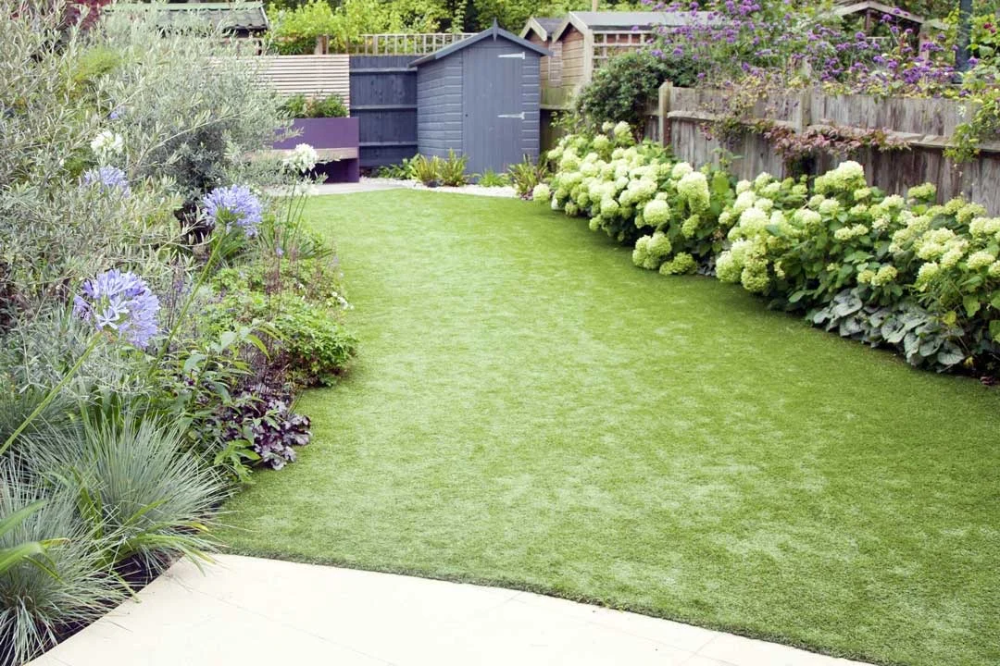

SB GARDENING · DRONFIELD & CHESTERFIELD
Regular Care
Keep the garden looking good through a routine that fits your space. Discuss fortnightly or monthly visits with SB Gardening.

Every 2 weeks
Fortnightly maintenance is £35–£45 per visit, based on average-sized gardens.
Monthly visits
Monthly garden maintenance is £45–£60 per visit. Larger gardens or additional work are priced accordingly.
What is included?
Lawn mowing, edges, weeding, a tidy and small shrubs. Tell us the garden size, condition and your priorities when requesting a quote.
Photography illustrates the service and is not presented as SB Gardening project work.
Full price guide →